API reference
The current API reference for the Codly package.
- Components render code blocks and their parts.
- Types describe configuration values and their accepted shorthand forms.
- Themes and helpers apply reusable styles and inspect block metadata.
Imports
Import the Codly package as a namespace:
#import "@preview/codly:2.0.0" as codlyComponents and styling
Codly uses Elembic custom elements and types. codly.new creates a code block. Component helpers such as codly.number-set_ apply defaults within the surrounding Typst scope. They are used with #show:, rather than native #set syntax. Refer to the elembic documentation for more information.
#import "@preview/codly:2.0.0" as codly
#show: codly.number-set_(numbering: "1.")
#show raw.where(block: true): codly.new
```py
print(42)
print(43)
```Edit & run on your device
Changing the controls or source loads a locally hosted Typst compiler (~29 MB). Edits stay in this tab, disappear on navigation, and are never uploaded. Only bundled packages and fonts are available.
The highlighted source and output update after you stop typing. Copy code includes your edits.

Each component page documents its constructor and available *-set_ and *-show_ helpers. Many configuration types do not render content directly, instead being meant to be called internally by Codly. Most values can be built from dictionaries or arrays instead of needing manual type invocation. Whether the elements/types can be shown and their constructors are detailed on their respective pages.
Coordinates and defaults
Source-line ranges are one-based and include both endpoints. Character highlights use zero-based bounds with an exclusive end; callout pointers and explicit skip positions have their own conventions documented on their type pages. Displayed line numbers can differ from source positions after applying an offset. Check the field’s definition before using displayed numbers as configuration coordinates.
auto and none have field-specific meanings. A default value does not always describe the final appearance: themes, scoped styling rules, and surrounding Typst text or raw settings can affect rendering.
paint means a color, gradient, or tiling. array<T> means an array of values of type T. The type notation in signature blocks describes accepted values; it is not runnable Typst syntax. The preview examples are runnable and editable.